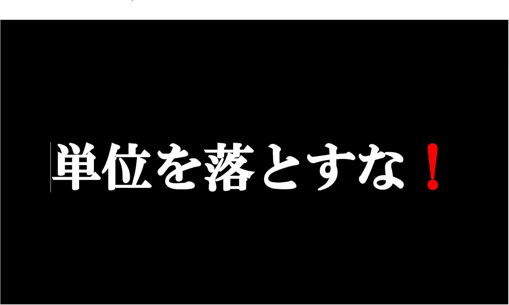
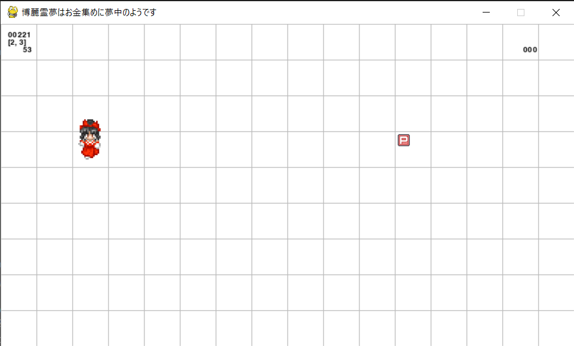
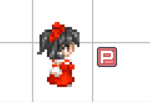
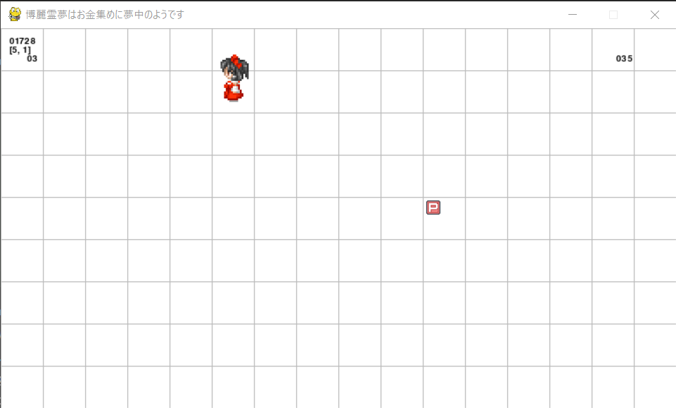

一つのゲームから、たくさんの笑顔を送りたい。
My Portfolio by Koutarou
このページで、私の実績を紹介します。
私のことをよく知っていただければ幸いです。
(最終更新日:2025/11/24)
自己紹介
- 名前:柿谷耕太朗
- 所属:大阪公立大学工業高等専門学校
- 学年:高専2年生
作った物(成果物)
- 商品比較プログラム
比べたい商品の数と、それぞれの値段と量を入力することで、
どの商品が一番お得かがわかります。
当たり前ですが、安く買い物を済ませるのに役立ちます。
商品比較プログラムのリンクはこちら
- 高専祭展示物『単位を落とすな』
この作品は、第59回の高専祭、2-Iの出し物の1つとして、
5人のグループメンバーと共に製作した作品です。
私が主に行った仕事は、内容やコマンドのサポートです。
このコマンドを使えばいいのでは？や、このアイデアはよさそう。など、
自分が班長でありながら、まるで裏方のような仕事をしました。
この部分は反省すべき点ですね。

- 「博麗霊夢はお金集めに夢中のようです」
製作期間:2023年12月～2024年1月
この作品は、学校の課題の一つです。
学校で学び、使用したコードを基盤として、
時間制限と得点のシステムを追加したものです。
動作する仕組み自体は簡単です。
矢印キーで移動し、P符を手に入れれば得点になります。
これを1分間続け、どこまで伸ばせるかというゲーム性になってます。
ただし、それでもまだまだ腕は上がっていません。
グリッドが背景なのはいささかどうかと思いますが、当時はこのままでもしっくり来たのでそのままで。
矢印キーは押しっぱなしだと一度しか動かないので、連打するのがきつかったり。
あと、P符の位置が全然真ん中にならなかったのも反省点ですね。
割とボロボロな出来栄えですが、今の自分にはこれが限界でした。
全然学べたことを活かせてないというのは、自分でも歯がゆいものです。
このゲームのリンクはこちら



学んだプログラミング言語
全て学校授業レベルの使用経験があります。
- Python言語
- Arduino言語
- Scratch
- Git/GitHub
- VSCode (venvによるPython開発)
- ArduinoIDE
- Deeds-DCS
- MakeCode for micro:bit
- Tinkercad
- WSL (Windows Subsystem for Linux)
- Tera Term
- Wireshark
- Cisco Packet Tracer
自分の長所
自分の好きな事には延々とのめりこめる。
無茶なお願いでも基本的には受けて手伝う。
やることがないときは積極的に聞く。
自分の短所
どうしても後ろ向きに考えてしまいがち。
完璧主義のせいで、うまくいかないとすぐやめてしまう。
何事にもやる気になりづらく、よっぽどのことがないと動かない。